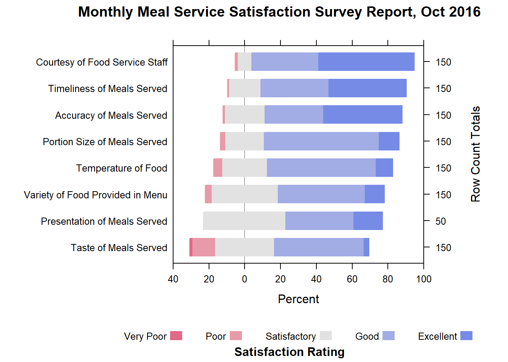
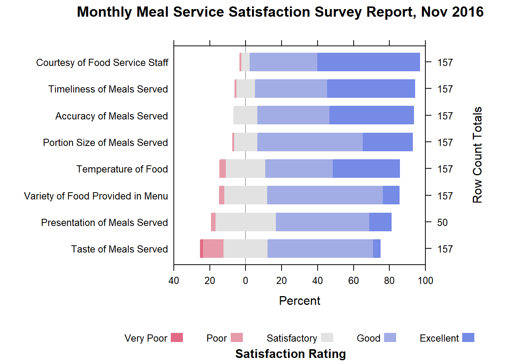
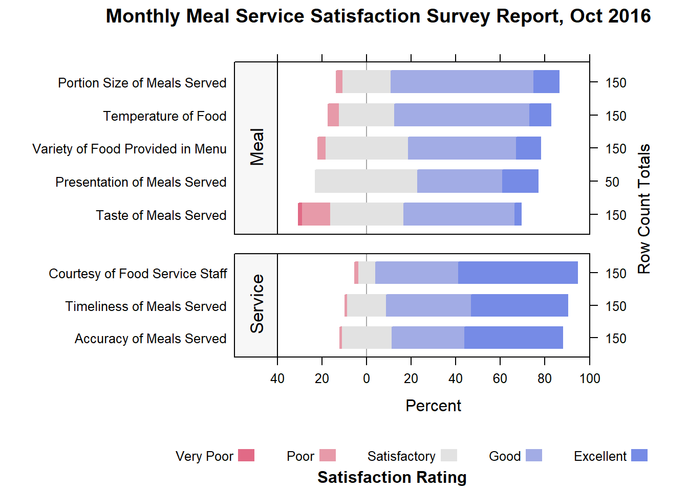
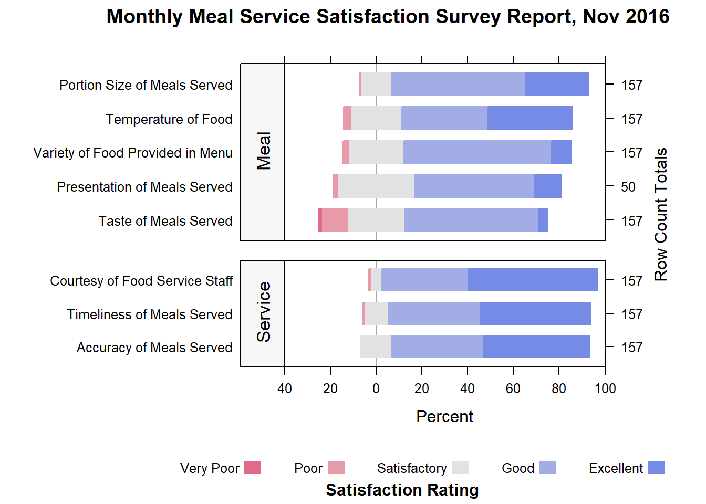

pacman::p_load(HH, tidyverse)4 Visualising Likert Scale Data with Divergining Stacked Bar Chart
4.1 Overview
Developed in 1932 by Rensis Likert to measure attitudes, the typical Likert scale is a 5- or 7-point ordinal scale used by respondents to rate the degree to which they agree or disagree with a statement (table). In an ordinal scale, responses can be rated or ranked, but the distance between responses is not measurable. Thus, the differences between “always,” “often,” and “sometimes” on a frequency response Likert scale are not necessarily equal. In other words, one cannot assume that the difference between responses is equidistant even though the numbers assigned to those responses are.
Diverging stacked bar charts are often the best choice when visualizing Likert scale data. There are various ways to produce these graphs, there are:
- likert package,
- likert function of HH package, and
- plot_liker function of sjPlot package
In this hands-on exercise, we will focus on using likert function of HH package.
4.2 Data Preparation
4.2.1 Installing and launching R packages
For this exercise, the HH R package will be used. You are also need to ensure that the tidyverse family packages also used install.
The code chunks below will accomplish the task.
4.2.2 Importing Data
First, important the data into R by using the code below.
raw <- read_csv("chap04/data/SurveyData.csv")Notice that all the variables are categorical data type.
4.3 Data Preparation
4.3.1 Making the table long
The data has responses for different questions in columns. The questions data in columns are gathered into rows with the tidyr’s gather function
survey <- gather(raw, measure, response, c(5:12))4.3.2 Converting to factor
The measure and response columns are recoded as factors.
survey$measure <- as.factor(survey$measure)
survey$response <- as.factor(survey$response)4.3.3 It is about time
The data is filtered by Month using the filter function from dplyr.
Oct <- filter(survey, Month=="Oct")
Nov <- filter(survey, Month=="Nov")4.3.4 Creating the contingency table
The data is tabulated into a contingency table by measure and response (satisfaction rating)
Oct_df <- table(Oct$measure,Oct$response) %>%
as.data.frame.matrix()
Nov_df <- table(Nov$measure,Nov$response) %>%
as.data.frame.matrix()4.3.5 Changing the column name
The column names are changed to reflect the satisfaction rating (Very Poor, Poor, Satisfactory, Good, Excellent) instead of the number scale( 1,2,3,4,5). The number “0” is recoded as “Missing”. The row names are changed to the actual 8 questions instead of using the names Measure 1 to Measure 8
colnames(Oct_df) <- c("No_Resp","Very Poor","Poor","Satisfactory","Good","Excellent")
rownames(Oct_df)<-c("Temperature of Food","Timeliness of Meals Served","Accuracy of Meals Served","Courtesy of Food Service Staff","Portion Size of Meals Served","Taste of Meals Served","Variety of Food Provided in Menu","Presentation of Meals Served")
colnames(Nov_df) <- c("No_Resp","Very Poor","Poor","Satisfactory","Good","Excellent")
rownames(Nov_df) <- c("Temperature of Food","Timeliness of Meals Served","Accuracy of Meals Served","Courtesy of Food Service Staff","Portion Size of Meals Served","Taste of Meals Served","Variety of Food Provided in Menu","Presentation of Meals Served")4.3.6 Changing the dataframe row name
The R dataframe row names are converted into a column called Measure for better usage
Oct_df <- tibble::rownames_to_column(Oct_df, var="Measure")
Nov_df <- tibble::rownames_to_column(Nov_df, var="Measure") 4.3.7 Excluding missing value
The column “Missing” is removed as we do not want to plot it as it would distort the chart.
Oct_df <- Oct_df[,c(1,3:7)]
Nov_df <- Nov_df[,c(1,3:7)]4.4 Working with likert function of HH Package
The survey results are presented using stacked divergent barcharts using the likert function from the HH library in R.
4.4.1 The basic diverging stacked bar chart
Below are the code chunk used to create the basic diverging stacked bar charts for the month of October of 2016.
likert(Measure ~ ., data=Oct_df, ylab=NULL,
ReferenceZero=3, as.percent=TRUE,
positive.order=TRUE,
main = list("Monthly Meal Service Satisfaction Survey Report, Oct 2016",x=unit(.55, "npc")),
sub= list("Satisfaction Rating",x=unit(.57, "npc")),
xlim=c(-40,-20,0,20,40,60,80,100),
strip=FALSE,
par.strip.text=list(cex=.7))
Things to learn from the code chunk above:
- The results are displayed as percentages using the as.percent=TRUE option.
- The results are sorted by descending order using the positive.order=TRUE option.
- The x-axis tick marks separtion is set to 20. Since we are using a divergent chart we have to define negative values as well.
- The unit function is used to define the position of the main title and subtitle to ensure they are centered.
- The count of responses for each question is displayed with tick marks.
DIY: Plot a diverging bar chart for the month of November 2016.
The output should look similar to the figure below:

4.4.2 Diverging Stacked Bar Charts with Two Categories
We try out the option of splitting the questions into Meal and Services categories.
Type <-c("Meal","Service","Service","Service","Meal","Meal","Meal","Meal")
Oct_df2<-cbind(Oct_df,Type)
Nov_df2<-cbind(Nov_df,Type)
likert(Measure ~ .| Type, data=Oct_df2,
layout=c(1,2),
scales=list(y=list(relation="free")),
between=list(y=1),
strip.left=strip.custom(bg="gray97"),
strip=FALSE,
par.strip.text=list(cex=1.1, lines=2),
ylab=NULL,
cex=1.2,
ReferenceZero=3,
as.percent=TRUE,
positive.order=TRUE,
main = list("Monthly Meal Service Satisfaction Survey Report, Oct 2016",x=unit(.55, "npc")),
sub= list("Satisfaction Rating",x=unit(.57, "npc")),
xlim=c(-40,-20,0,20,40,60,80,100),
resize.height.tuning=1)
DIY: Plot a diverging bar chart with two categories for the month of November 2016.
The output should look similar to the figure below:

Credit: This hands-on exercise was created base on DataViz Makeover 3 submission by David Ten Kao Yuan (ISSS608 AY2016-17T3).